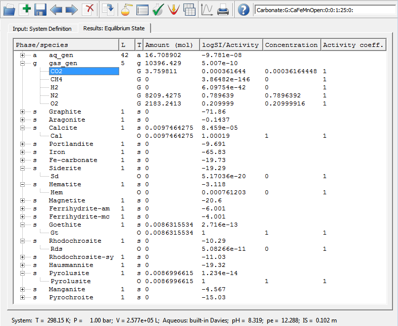

Previous Page Back to Start Page
(13)
After the equilibrium state has been calculated and saved in the
database, you will see a "Results" page (tab) of the "Single
Thermodynamic System" dialog:
This page shows a list of all potentially present phases (aq_gen
denotes aqueous electrolyte, gas_gen - gas mixture); number of
species included in each phase; and total mole quantity of each phase
at equilibrium.
Stable phases appear in
positive mole quantities; unstable phases - in zero quantities. Note
that of three initial metal carbonate ingredients (CaCO3,
FeCO3 and MnCO3), only one (Calcite) appears as a
stable solid phase at equilibrium. Iron appears as Goethite phase
(FeOOH) and manganese - as Pyrolusite (MnO2) instead of the
respective carbonates Siderite FeCO3 and Rhodochrosite MnCO3
initially given as ingredients.
The reason, of course, is the oxidizing gas atmosphere - the gas phase containing 20% O2 is present in a large excess (almost 10400 moles). This results in pe = 12.29, visible in the Status line. Both iron and manganese carbonate phases are stable only in absence of gaseous oxygen, at reducing conditions (as our calculation also shows).
(14) Each phase entry can be
expanded to see dependent components (species) in this phase (below).
To expand/shrink the phase, mouse-click on the "+"/"-" sign on the
listview tree.

Now, in the "Amount x (moles)" column, you can see mole quantities of
species
present at equilibrium.
To the right, the activity values (calculated using GEM dual
solution vector u) are shown for all species. For
gases, these numbers are actually fugacity, and for single-component
solids they mean the saturation index (1 - saturated, < 1 -
under-saturated, > 1 - super-saturated). The last column shows the
calculated activity coefficients.
On
the above screenshot, you can see that the system is saturated with
respect to calcite, and 19 orders of magnitude undersaturated to
siderite. The system is also slightly undersaturated to aragonite
(trace quantity of this solid appear because of mass balance
residuals).
In
the "Concentration" column, the mole fractions of gases in the gas
phase are pretty much the same as those usually present in the
atmosphere.
By
expanding the "aq_gen" phase, you can also examine the equilibrium
aqueous speciation (not shown); note that activity and concentration
for aqueous species are expressed in practical (molal, mol/kgH2O)
scale.
To see other results of our model calculation, click on the "Detailed
results" toolbar button (and proceed to the
next page of this screenshot tutorial).